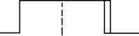

Displaying window close
After a window close, there is always some time where no further edge action occurs. The Timing Diagram represents this as a closed box after the window compare is finished.
The closed box on the right of the figure below shows where the window close action occurs. The area within the box indicates the time where no edge action can occur.
If you are viewing a large number of cycles in the Timing Diagram, then the window close box may be difficult to identify, and will appear as a thicker than usual line.

Functional changes
- Introduced before SmarTest 6.3.2